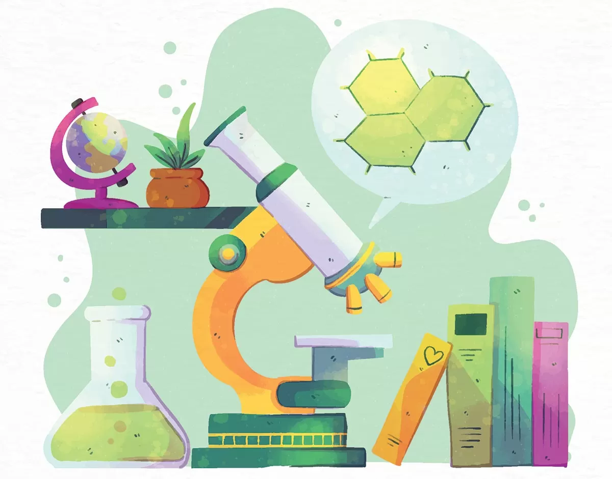

La biolog a es el estudio cient fico de la vida. La vida en la Tierra adopta una asombrosa variedad de formas, que con frecuencia, funcionan y se comportan de maneras que resultan extraordinarias para los seres humanos. Por ejemplo, las ranas incubadoras g stricas (Rheobatrachus) se tragan a sus embriones y, tiempo despu s, los dan a luz expuls ndolos por la boca! Algunas especies de bejines, un tipo de hongos,son capaces de producir billones de esporas cuando se reproducen. Los tiburones toro matan a sus hermanos y se los comen cuando a n est n dentro del cuerpo de la madre. Algunas orqu deas Ophrys se parecen tanto a las abejas hembra que las abejas macho intentan aparearse con ellas. s. Los pulpos y los calamares poseen sorprendentes habilidades para resolver problemas a pesar de tener un cerebro peque o. Algunas bacterias viven apenas 15 minutos, mientras que la vida de los pinos de cerdas c nicas (bristlecone) es tan largacomo la de 10 generaciones de seres humanos. En resumen,desde las mayores profundidades oce nicas hasta una de las capas de la atm sfera, la trop sfera, la vida es abundante y diversa.
